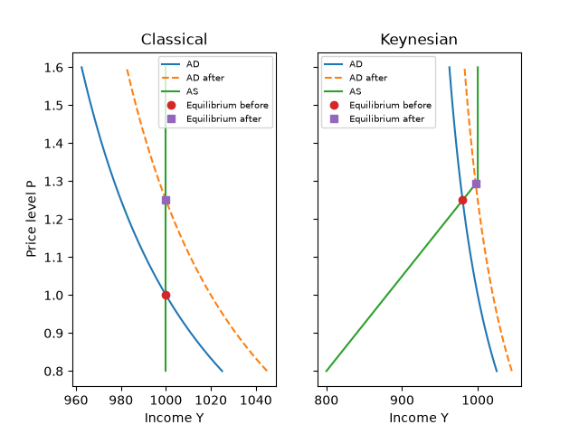
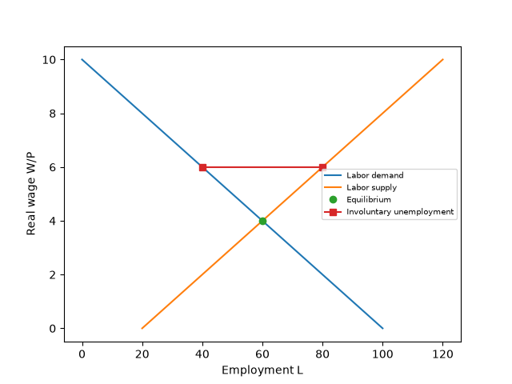
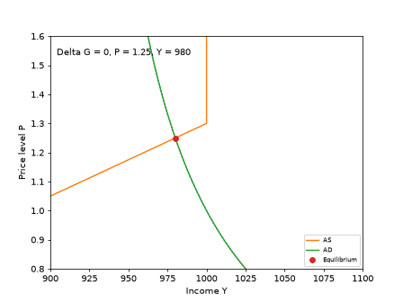

第 10 章: 労働市場と AD-AS 分析¶
10.1 この章の地図¶
第 9 章までは、物価を一定として、財市場と貨幣市場を見てきました。この章では、物価が動く経済を扱います。まず、労働市場で、実質賃金と雇用が決まる仕組みと、失業が生まれる理由を計算します。次に、IS-LM から総需要（AD）を導き、労働市場に基づく総供給（AS）と合わせて、AD-AS の均衡を求めます。古典派（AS が垂直）とケインズ（AS が右上がりのち垂直）で、同じ政策の効果が、どう違うかを比べます。

| 項目 | 内容 |
|---|---|
| 経済学の題材 | 労働需要・供給、非自発的失業、効率賃金、総需要と総供給、AD-AS の均衡、政策と生産性向上の効果 |
| 使う Python の機能 | 関数、dataclass（frozen=True と replace）、関数を引数に渡す（Callable）、二分法、第 8 章の solve_is_lm の再利用 |
| 新しく導入するライブラリ | なし |
| 完成形 | LaborCurves、real_wage、labor_demand、labor_supply、labor_equilibrium、involuntary_unemployment、effort_level、best_efficiency_wage、AdEconomy、aggregate_demand_income、classical_supply、keynesian_supply、solve_ad_as、expand_demand、shift_supply |
| ファイル | 実装: lib/chapter10/labor.py、lib/chapter10/ad_as.py、lib/chapter10/plot.py（図）／テスト: test/chapter10/test_labor.py、test/chapter10/test_ad_as.py、test/chapter10/test_plot.py（自分で書くときは、practice/chapter10/ に、同じ名前で作ります） |
| データ | なし（手計算できる小さな例だけ） |
経済学の式とコードの対応¶
| 経済学 | 式 | コード |
|---|---|---|
| 実質賃金 | w = W ÷ P | real_wage(nominal_wage, price) |
| 労働需要 | Ld = a − b·w（この章の b・c は、労働の係数。AD の b（投資の利子感応度）・c（限界消費性向）とは別） | labor_demand(curves, wage) |
| 労働供給 | Ls = c + d·w | labor_supply(curves, wage) |
| 労働市場の均衡 | w* = (a − c) ÷ (b + d) | labor_equilibrium(curves) |
| 非自発的失業 | Ls − Ld（w が w* より高いとき） | involuntary_unemployment(curves, wage) |
| 効率賃金 | 賃金あたりの努力 e(w) ÷ w を最大にする w | best_efficiency_wage(wages, subsistence) |
| 総需要 AD | 実質貨幣供給 M ÷ P での IS-LM の所得 | aggregate_demand_income(economy, price) |
| 古典派の総供給 | Y = 完全雇用所得 | classical_supply(price, full_employment_income) |
| ケインズの総供給 | Y = min(完全雇用所得, 基準の所得 + 傾き × P) | keynesian_supply(price, ...) |
| AD-AS の均衡 | AD(P) = AS(P) となる P と Y | solve_ad_as(economy, supply) |
前提とする既存の章¶
この章の前提は、IS-LM の均衡を solve_is_lm で求める第 8 章と、政策で IS や LM を動かす第 9 章です。
第 1 シリーズの第 14 章（AD-AS と主要理論）と題材が重なりますが、この記事は、独立して読めます。
10.2 準備¶
進め方の目安: この章は、新しい道具が多いので、2 回に分けて進めることをすすめます。1 回目は、労働市場と効率賃金（10.5 の前半）、2 回目は、AD-AS（総需要・総供給・二分法・政策の効果）です。
サンプルコードは、リポジトリの apps/macro-basics-programming/python/ にあります。環境の作り方は、第 1 章 の 1.2 節と同じです。
cd apps/macro-basics-programming/python
uv sync
uv run pytest test/chapter10
60 passed
自分でコードを書くときは、practice/chapter10/ を作って、完成形と同じ名前（labor.py・test_labor.py など）のファイルに書きます。テストは、uv run pytest practice/chapter10 で動かします。完成形（lib/ と test/）は、答え合わせ用です。 自分で書き終えてから、開いてください。
10.3 予想する¶
労働市場は、労働需要 Ld = 100 − 10w、労働供給 Ls = 20 + 10w です（w は実質賃金）。
- 需要と供給が一致する、実質賃金と雇用量は、いくつですか
- 実質賃金が 6 のとき、非自発的失業は、いくつですか
- 名目賃金が 4 で下がらないとします。物価が 1 から 0.5 に下がると、非自発的失業は、いくつになりますか
- 賃金が高いほど、労働者は、よく働きます（努力 e(w) = √(w − 4)）。賃金 1 単位あたりの努力 e(w) ÷ w が最大になる賃金は、いくつですか。それは、市場の均衡賃金と比べて、高いですか、低いですか
AD-AS は、第 9 章と同じ国（c = 0.6、b = 20、k = 0.5、h = 100、名目貨幣供給 250、IS の切片 450）で、完全雇用所得は 1000 です。
- 物価が 1 から 2 に上がると、総需要（AD 上の所得）は、増えますか、減りますか。いくつになりますか
- 古典派（AS が垂直）で、政府支出を 10 増やすと、物価と所得は、どうなりますか
- ケインズ（AS が、Y = 480 + 400P で右上がり。1000 で垂直）では、同じ政策で、物価と所得は、どうなりますか。政府支出を 20 増やすと、どうなりますか
- 生産性が上がって、AS が右へ動くと、所得と物価は、どうなりますか
10.4 労働市場と AD-AS の考え方¶
労働市場¶
労働市場では、実質賃金 w = W ÷ P（名目賃金を物価で割った値）が、価格の役割をします。企業は、実質賃金が低いほど、多く雇うので、労働需要は実質賃金の減少関数です。労働者は、実質賃金が高いほど、働きたいので、労働供給は実質賃金の増加関数です。
Ld = a − b·w、Ls = c + d·w、均衡 w* = (a − c) ÷ (b + d)
均衡では、働きたい人が、みな、働けます。それでも、条件の合わない仕事を選ばない人（自発的失業）は残ります。働きたいのに、働けない人（非自発的失業）は、いません。
- 古典派: 名目賃金が伸縮的なので、超過供給があれば、賃金が下がり、すぐに均衡へ戻る。非自発的失業は、ない
- ケインズ: 名目賃金は下方に硬直的で、下がらない。実質賃金が均衡より高いままなら、供給が需要を上回り、その差が非自発的失業になる
効率賃金¶
企業は、市場の均衡賃金より高い賃金を、あえて払うことがあります（効率賃金仮説）。賃金を上げると、離職率が下がり、労働者の質が上がり、労働意欲が高まるからです。企業が、賃金 1 単位あたりの努力 e(w) ÷ w を最大にするなら、賃金は、均衡より高くなり、その分、非自発的失業が残ります。
総需要と総供給¶
総需要（AD）は、物価と、財市場・貨幣市場を均衡させる所得の関係です。物価 P が上がると、実質貨幣供給 M ÷ P が減り、LM が左へ動くので、均衡の所得が減ります。そのため、AD は右下がりです。
総供給（AS）は、物価と、企業が供給する所得の関係で、労働市場の考え方に基づきます。
- 古典派: 労働市場が、いつも均衡するので、所得は、完全雇用所得で決まる。物価によらず、垂直
- ケインズ: 名目賃金が硬直的で、物価が上がると、実質賃金が下がり、雇用と生産が増える。物価とともに、所得は増える（右上がり）。完全雇用所得に達すると、垂直になる
この章では、ケインズの AS を、Y = min(完全雇用所得, 基準の所得 + 傾き × P) と、仮定して与えます。生産関数から導く手順は、扱いません。
10.5 プログラミング¶
Red: 労働市場のテスト¶
最初のテストを書きます。需要と供給の式が、手計算できる値になるようにします。均衡は、100 − 10w = 20 + 10w から、w = 4、L = 60 です。
CURVES = LaborCurves(
demand_intercept=100, demand_slope=10, supply_intercept=20, supply_slope=10
)
def test_均衡では実質賃金4で雇用60() -> None:
wage, employment = labor_equilibrium(CURVES)
assert wage == pytest.approx(4)
assert employment == pytest.approx(60)
assert labor_demand(CURVES, wage) == pytest.approx(labor_supply(CURVES, wage))
LaborCurves がまだないので、テストは失敗します（Red）。
Green: 労働市場を実装する¶
需要と供給の 4 つの定数は、dataclass にまとめます。frozen=True で、作ったあとは、書き換えられません。
@dataclass(frozen=True)
class LaborCurves:
"""労働需要 Ld = demand_intercept − demand_slope·w と、
労働供給 Ls = supply_intercept + supply_slope·w。"""
demand_intercept: float
demand_slope: float
supply_intercept: float
supply_slope: float
def labor_equilibrium(curves: LaborCurves) -> tuple[float, float]:
"""需給が一致する、実質賃金と雇用量 (w*, L*)。"""
_check_curves(curves)
wage = (curves.demand_intercept - curves.supply_intercept) / (
curves.demand_slope + curves.supply_slope
)
validate_non_negative(wage, "均衡の実質賃金が負になる。需要と供給の切片を見直す")
return wage, labor_demand(curves, wage)
import と補助関数（写すときに足す）
記事の抜粋には、import と、先頭が _ の補助関数・定数を、省いています。完成形のファイルの先頭にある、次の部分を、写してください。
lib/chapter10/ad_as.py
from collections.abc import Callable
from dataclasses import dataclass, replace
from lib.chapter01.validation import validate_positive
from lib.chapter08.is_lm import solve_is_lm
_BISECTION_STEPS = 200
def _check_price(price: float) -> None:
validate_positive(price, "物価は、正にする")
lib/chapter10/labor.py
import math
from collections.abc import Sequence
from dataclasses import dataclass
from lib.chapter01.validation import validate_non_negative, validate_positive
def _check_curves(curves: LaborCurves) -> None:
validate_positive(
curves.demand_slope, "労働需要の傾きは、正にする（需要は賃金の減少関数）"
)
validate_positive(
curves.supply_slope, "労働供給の傾きは、正にする（供給は賃金の増加関数）"
)
def _check_wage(wage: float) -> None:
validate_non_negative(wage, "実質賃金は、0 以上にする")
需要の傾きと供給の傾きが、0 以下のときや、均衡の賃金が負になる設定は、エラーにします（_check_curves。labor_demand・labor_supply は、a − b·w・c + d·w を返すだけです）。
非自発的失業と名目賃金の硬直性¶
実質賃金が均衡より高いと、供給が需要を上回ります。この差が、非自発的失業です。均衡より低いときは、需要が供給を上回る（人手不足）ので、失業は 0 です。名目賃金が硬直的なら、物価が下がると、実質賃金 W ÷ P が上がるので、失業が生まれます。
def test_均衡より高い賃金では非自発的失業が生まれる() -> None:
assert involuntary_unemployment(CURVES, 6) == pytest.approx(40)
def test_名目賃金が硬直的だと物価の下落が失業を生む() -> None:
nominal_wage = 4
assert involuntary_unemployment(CURVES, real_wage(nominal_wage, 1)) == 0
unemployment = involuntary_unemployment(CURVES, real_wage(nominal_wage, 0.5))
assert unemployment == pytest.approx(80)
def real_wage(nominal_wage: float, price: float) -> float:
"""実質賃金 w = W ÷ P。"""
validate_non_negative(nominal_wage, "名目賃金は、0 以上にする")
validate_positive(price, "物価は、正にする")
return nominal_wage / price
def involuntary_unemployment(curves: LaborCurves, wage: float) -> float:
"""非自発的失業 = 供給 − 需要。賃金が均衡より低いときは、超過需要で、失業は 0。"""
return max(0.0, labor_supply(curves, wage) - labor_demand(curves, wage))
効率賃金¶
努力を e(w) = √(w − 生存水準) とします。賃金が生存水準以下だと、努力は 0 です。企業は、賃金の候補から、賃金 1 単位あたりの努力 e(w) ÷ w が最大のものを選びます。生存水準が 4 なら、e(w) ÷ w は、w = 8 で最大です（e(8) ÷ 8 = 2 ÷ 8 = 0.25）。
def test_効率賃金は市場の均衡賃金より高く失業が残る() -> None:
wage = best_efficiency_wage([5, 6, 7, 8, 9, 10, 12], 4)
assert wage > labor_equilibrium(CURVES)[0]
assert involuntary_unemployment(CURVES, wage) == pytest.approx(80)
def best_efficiency_wage(wages: Sequence[float], subsistence: float) -> float:
"""賃金 1 単位あたりの努力 e(w) ÷ w を、最大にする賃金。"""
if not wages:
raise ValueError("賃金の候補が空")
if any(w <= 0 for w in wages):
raise ValueError("賃金の候補は、すべて正にする")
return max(wages, key=lambda w: effort_level(w, subsistence) / w)
総需要を IS-LM から導く¶
物価 P のときの、実質貨幣供給 M ÷ P を、第 8 章の solve_is_lm に渡すと、AD 上の所得が求まります。IS-LM を作る 6 つの定数は、AdEconomy にまとめます。この例では、AD は Y = 900 + 100 ÷ P と書けます（第 9 章の閉じた式で、M ÷ P を 250 ÷ P にしたもの）。
ECONOMY = AdEconomy(mpc=0.6, b=20, intercept=450, k=0.5, h=100, nominal_money=250)
FULL = 1000
BASE = 480
SLOPE = 400
def test_総需要は右下がりで物価が上がると所得は減る() -> None:
assert aggregate_demand_income(ECONOMY, 2) == pytest.approx(950)
assert aggregate_demand_income(ECONOMY, 0.5) == pytest.approx(1100)
assert aggregate_demand_income(ECONOMY, 2) < aggregate_demand_income(ECONOMY, 1)
@dataclass(frozen=True)
class AdEconomy:
"""IS-LM を作る定数。IS: (1 − c)Y + b·r = A、LM: k·Y − h·r = M/P。"""
mpc: float
b: float
intercept: float
k: float
h: float
nominal_money: float
def aggregate_demand_income(economy: AdEconomy, price: float) -> float:
"""AD 上の所得。実質貨幣供給 M/P で、第 8 章の IS-LM を解いた均衡所得。"""
_check_price(price)
income, _ = solve_is_lm(
economy.mpc,
economy.b,
economy.intercept,
economy.k,
economy.h,
economy.nominal_money / price,
)
return income
総供給を実装する¶
古典派の AS は、物価を受け取っても、使いません。ケインズの AS は、min で、右上がりと垂直をつなぎます（物価 0.5 で 680、1.25 で 980、1.3 以上で 1000。テストは test/chapter10/test_ad_as.py）。
def classical_supply(price: float, full_employment_income: float) -> float:
"""古典派の AS。物価によらず、完全雇用所得（垂直）。"""
_check_price(price)
return full_employment_income
def keynesian_supply(
price: float, full_employment_income: float, base_income: float, slope: float
) -> float:
"""ケインズの AS。Y = min(完全雇用所得, 基準の所得 + 傾き × P)。"""
_check_price(price)
validate_positive(slope, "総供給の傾きは、正にする")
return min(full_employment_income, base_income + slope * price)
AD と AS の交点を求める¶
AD と AS の交点は、AD − AS = 0 となる物価です。AD は物価とともに減り、AS は減らないので、AD − AS は、物価とともに減ります。そこで、二分法（範囲の真ん中で、符号を見て、範囲を半分に狭める）で、物価を探します。AS は、関数として、引数に渡します（古典派でもケインズでも、同じ solve_ad_as が使えます）。
手計算の値を、先にテストにします。なお、この章では、dataclass.replace（一部の値だけを変えた複製を作る）、Callable（関数を引数に渡す型）、functools.partial（関数の引数の一部を、先に決めた、新しい関数を作る。たとえば partial(keynesian_supply, slope=400) は、傾きを 400 に決めた、残りの引数だけをとる関数）が出てきます。古典派は、900 + 100 ÷ P = 1000 から、P = 1 です。ケインズは、480 + 400P = 900 + 100 ÷ P から、4P² − 4.2P − 1 = 0 で、P = 1.25、Y = 980 です。
二分法の手計算（古典派。説明のため、範囲を [0.5, 2] にします。コードの既定は [0.01, 100] です）: 真ん中の P = 1.25 では、AD = 980 で、AS = 1000 より小さい（AD − AS < 0）ので、解は、左半分 [0.5, 1.25] にあります。次の真ん中 P = 0.875 では、AD = 1014.3 で、AS より大きい（> 0）ので、右の [0.875, 1.25] へ。これを繰り返すと、範囲が半分ずつ狭まり、P = 1 に近づきます（コードは、これを 200 回繰り返します）。
ケインズで ΔG = 10 のときの物価: AD は Y = 920 + 100 ÷ P になります（IS の切片が 460 になり、第 9 章の閉じた式の分母 (1 − c) + b·k ÷ h = 0.5 で割るため。定数部分は 460 ÷ 0.5 = 920）。480 + 400P = 920 + 100 ÷ P から、4P² − 4.4P − 1 = 0。解の公式で、P = (4.4 + √35.36) ÷ 8 です（テストの値と同じ）。
def classical(price: float) -> float:
return classical_supply(price, FULL)
def keynesian(price: float) -> float:
return keynesian_supply(price, FULL, BASE, SLOPE)
def test_古典派の均衡は物価1で所得は完全雇用所得() -> None:
price, income = solve_ad_as(ECONOMY, classical)
assert price == pytest.approx(1)
assert income == pytest.approx(1000)
def test_ケインズの均衡は右上がりの部分で物価1_25所得980() -> None:
price, income = solve_ad_as(ECONOMY, keynesian)
assert price == pytest.approx(1.25)
assert income == pytest.approx(980)
def solve_ad_as(
economy: AdEconomy,
supply: Callable[[float], float],
price_low: float = 0.01,
price_high: float = 100.0,
) -> tuple[float, float]:
"""AD と AS の交点 (物価, 所得)。二分法で、AD − AS = 0 となる物価を探す。
AD は物価の減少関数、AS は非減少関数なので、AD − AS は物価とともに減る。
"""
def gap(price: float) -> float:
return aggregate_demand_income(economy, price) - supply(price)
low, high = price_low, price_high
if gap(low) < 0 or gap(high) > 0:
raise ValueError("探す範囲に、AD と AS の交点が無い")
for _ in range(_BISECTION_STEPS):
middle = (low + high) / 2
if gap(middle) > 0:
low = middle
else:
high = middle
price = (low + high) / 2
return price, supply(price)
交点が、探す範囲に無いとき（たとえば、完全雇用所得が、AD の下限 900 より小さいとき）は、エラーにします。
政策の効果と生産性の向上¶
AD を右へ動かす政策（政府支出の増加、貨幣供給の増加）は、expand_demand で表します。replace は、dataclass の一部だけを変えた、新しいものを作ります。もとの経済は、変わりません。AS を動かすのが、shift_supply です。生産性が上がると、完全雇用所得と基準の所得が、ともに増えます。負の値なら、AS は左へ動きます（次の章で使います）。
def test_古典派では拡張的な財政政策は物価だけを上げる() -> None:
expanded = expand_demand(ECONOMY, delta_government=10)
price, income = solve_ad_as(expanded, classical)
assert income == pytest.approx(1000)
assert price == pytest.approx(1.25)
def test_ケインズの右上がり部分では所得も物価も上がる() -> None:
price0, income0 = solve_ad_as(ECONOMY, keynesian)
expanded = expand_demand(ECONOMY, delta_government=10)
price, income = solve_ad_as(expanded, keynesian)
assert price == pytest.approx((4.4 + math.sqrt(35.36)) / 8)
assert income == pytest.approx(BASE + SLOPE * price)
assert price > price0
assert income > income0
assert income < FULL
def expand_demand(
economy: AdEconomy, delta_government: float = 0, delta_nominal_money: float = 0
) -> AdEconomy:
"""政府支出の増加 ΔG と、名目貨幣供給の増加で、AD を右へ動かした経済。"""
return replace(
economy,
intercept=economy.intercept + delta_government,
nominal_money=economy.nominal_money + delta_nominal_money,
)
def shift_supply(
full_employment_income: float, base_income: float, gain: float
) -> tuple[float, float]:
"""生産性の向上（gain > 0）で AS を右へ。負なら左へ。動かした後の両方の値を返す。"""
if full_employment_income + gain <= 0:
raise ValueError("動かしたあとの完全雇用所得が、0 以下になる")
return full_employment_income + gain, base_income + gain
予想の答え合わせ¶
予想した答えを、プログラムで確かめます。
from functools import partial
from lib.chapter10.ad_as import (
AdEconomy,
aggregate_demand_income,
classical_supply,
expand_demand,
keynesian_supply,
shift_supply,
solve_ad_as,
)
from lib.chapter10.labor import (
LaborCurves,
best_efficiency_wage,
involuntary_unemployment,
labor_equilibrium,
real_wage,
)
curves = LaborCurves(100, 10, 20, 10)
wage, employment = labor_equilibrium(curves)
print("均衡の実質賃金と雇用:", wage, employment)
print("実質賃金 6 の失業:", involuntary_unemployment(curves, 6))
print("名目賃金 4・物価 0.5 の失業:", involuntary_unemployment(curves, real_wage(4, 0.5)))
print("効率賃金:", best_efficiency_wage([5, 6, 7, 8, 9, 10, 12], 4))
economy = AdEconomy(mpc=0.6, b=20, intercept=450, k=0.5, h=100, nominal_money=250)
print("AD 物価 1 と 2:", aggregate_demand_income(economy, 1), aggregate_demand_income(economy, 2))
classical = partial(classical_supply, full_employment_income=1000)
keynesian = partial(keynesian_supply, full_employment_income=1000, base_income=480, slope=400)
for name, supply in (("古典派", classical), ("ケインズ", keynesian)):
for delta in (0, 10, 20):
moved = expand_demand(economy, delta_government=delta)
price, income = solve_ad_as(moved, supply)
print(f"{name} ΔG={delta}: 物価 {price:.4f} 所得 {income:.2f}")
full, base = shift_supply(1000, 480, 50)
supply = partial(keynesian_supply, full_employment_income=full, base_income=base, slope=400)
price, income = solve_ad_as(economy, supply)
print(f"ケインズ 生産性向上 50: 物価 {price:.4f} 所得 {income:.2f}")
full, _ = shift_supply(1000, 480, 100)
price, income = solve_ad_as(economy, partial(classical_supply, full_employment_income=full))
print(f"古典派 生産性向上 100: 物価 {price:.4f} 所得 {income:.2f}")
均衡の実質賃金と雇用: 4.0 60.0
実質賃金 6 の失業: 40
名目賃金 4・物価 0.5 の失業: 80.0
効率賃金: 8
AD 物価 1 と 2: 1000.0 950.0
古典派 ΔG=0: 物価 1.0000 所得 1000.00
古典派 ΔG=10: 物価 1.2500 所得 1000.00
古典派 ΔG=20: 物価 1.6667 所得 1000.00
ケインズ ΔG=0: 物価 1.2500 所得 980.00
ケインズ ΔG=10: 物価 1.2933 所得 997.32
ケインズ ΔG=20: 物価 1.6667 所得 1000.00
ケインズ 生産性向上 50: 物価 1.1436 所得 987.44
古典派 生産性向上 100: 物価 0.5000 所得 1100.00
- 1 つ目の問い: 均衡は、実質賃金 4、雇用 60 です
- 2 つ目の問い: 実質賃金 6 では、需要 40、供給 80 で、非自発的失業は 40 です
- 3 つ目の問い: 名目賃金 4 のまま、物価が 0.5 に下がると、実質賃金は 8 に上がり、需要 20、供給 100 で、失業は 80 です。物価が下がるだけで、失業が増えました。名目賃金が、下がらないからです
- 4 つ目の問い: e(w) ÷ w を最大にする賃金は 8 で、均衡の賃金 4 の 2 倍です。この賃金では、失業が 80 残ります。均衡より高い賃金を、企業が、自分で選ぶので、失業が消えません
- 5 つ目の問い: 物価が 1 から 2 に上がると、AD 上の所得は、1000 から 950 に減ります。実質貨幣供給が半分になり、LM が左へ動くからです（右下がり）
- 6 つ目の問い（古典派）: 政府支出を 10 増やすと、物価は 1 から 1.25 に上がり、所得は 1000 のまま変わりません。20 増やしても、所得は 1000 で、物価だけが 1.6667 に上がります。所得は、供給で決まるからです
- 7 つ目の問い（ケインズ）: 政府支出を 10 増やすと、物価も所得も上がります（物価 1.25 → 1.2933、所得 980 → 997.32）。20 増やすと、AS の垂直な部分に達し、所得は 1000 のまま、物価だけが 1.6667 に上がります
- 8 つ目の問い: 生産性が上がると、AS が右へ動き、所得が増え、物価が下がります。ケインズでは、物価 1.25 → 1.1436、所得 980 → 987.44。古典派では、物価 1 → 0.5、所得 1000 → 1100 です
図¶
労働市場と AD-AS の図を、描く関数（plot_labor_market・plot_ad_as。lib/chapter10/plot.py）を、テストから書きます。曲線の端の座標と、均衡の点を、手計算の値と比べます。
描画のテストと実装（後回しにしても、学習は成り立ちます）
def xs(ln: Line2D) -> list[float]:
return [float(v) for v in np.asarray(ln.get_xdata(), dtype=float)]
def ys(ln: Line2D) -> list[float]:
return [float(v) for v in np.asarray(ln.get_ydata(), dtype=float)]
def test_労働市場の図の失業は硬直的な賃金での需要から供給まで() -> None:
ax = plot_labor_market(CURVES, sticky_wage=6, wage_max=10).axes[0]
gap = line(ax, "Involuntary unemployment")
assert xs(gap) == pytest.approx([40, 80])
assert ys(gap) == pytest.approx([6, 6])
def test_古典派の均衡は所得が動かず物価だけが動く() -> None:
left, _ = draw()
before, after = line(left, "Equilibrium before"), line(left, "Equilibrium after")
assert xs(before) == pytest.approx([1000])
assert ys(before) == pytest.approx([1.0])
assert xs(after) == pytest.approx([1000])
assert ys(after) == pytest.approx([1.25])

AD-AS の図は、左右 2 枚（古典派・ケインズ）で、AD の移動と、均衡の動きを描きます（章頭の図。plot_ad_as）。
ノートブックで試す¶
数字を書き換えて、結果と図が変わるのを、手軽に確かめられます。apps/macro-basics-programming/python/notebooks/ch10_labor_market_and_ad_as.ipynb を開き、「Parameters」のセルの数字（労働需要と労働供給の係数、硬直的な賃金、AD と AS の係数、政府支出と供給の変化）を書き換えて、上から順に実行します。起動は、アプリのディレクトリで uv run --with jupyterlab jupyter lab notebooks/ です。
動かして見る¶
政府支出を 0 から 15 へ増やします。AD 曲線が右へ動き、AS が右上がりの間は、物価も所得も上がります。所得が完全雇用所得に達すると、あとは、物価だけが上がります。

このアニメーションは、lib/animations/ の関数で作っています（uv run python -m tools.render_animations で、GIF を書き出します）。写経は、不要です。動きを見て、式と図の対応を、確かめてください。
実行結果¶
uv run pytest test/chapter10
60 passed
10.6 規則で言うと¶
- 均衡より高い実質賃金は、非自発的失業を生む。 名目賃金が下がらないと、物価の下落で、実質賃金が上がり、失業が増える
- AD は右下がり、AS は、古典派で垂直、ケインズで右上がりのち垂直。 交点が、物価と所得の均衡
- 同じ政策でも、AS の形で、効果が違う。 AS が垂直なら、物価だけが上がる。AS が右上がりなら、所得も物価も上がる。生産性の向上は、AS を右へ動かし、所得を増やし、物価を下げる
混同しやすい点を、表にまとめます。
| 混同しやすい点 | 違い |
|---|---|
| 自発的失業と非自発的失業 | 自発的失業は、今の賃金では働かない人（均衡でも、残る）。非自発的失業は、今の賃金で働きたいのに、働けない人（賃金が均衡より高いときの、供給 − 需要） |
| 名目賃金と実質賃金 | 名目賃金 W は、金額。実質賃金 w = W ÷ P は、買える量。硬直的なのは、名目賃金 |
| 古典派とケインズ | 古典派は、名目賃金が伸縮的で、AS が垂直。ケインズは、名目賃金が下方硬直的で、AS が右上がり（垂直になるまで） |
| IS-LM と AD | IS-LM は、物価を一定とした、所得と利子率の均衡。AD は、物価を変えたときの、IS-LM の所得をつないだ曲線 |
| AD の移動と AD 上の移動 | 物価の変化では、AD 上を動く。政府支出や貨幣供給の変化では、AD そのものが動く |
このモデルが成り立たない場面¶
- ケインズの AS は、仮定です。 この章では、基準の所得 480 と傾き 400 を、与えました。生産関数と労働市場から導いたものではありません。値を変えれば、均衡も変わります
- AD は、実質貨幣供給の変化だけで、右下がりです。 物価が下がると、資産の実質価値が増えて消費が増える効果（ピグー効果）や、物価が下がると、借金の負担が増える効果（第 11 章で扱います）は、含みません
- 名目賃金が、永久に硬直的とは限りません。 長い期間では、賃金も動き、AS は垂直に近づきます。効率賃金の努力の式 e(w) = √(w − 4) も、例です
10.7 練習問題¶
| 種類 | 問題 |
|---|---|
| 想起 | 本文を閉じて、labor_equilibrium のテスト（労働需要 100 − 10w、労働供給 20 + 10w で、実質賃金 4、雇用 60）を書いてください |
| 生成 | 解説を見る前に、非自発的失業が、労働供給の何割かを返す unemployment_share(curves, wage) を、テストから書いてください。実質賃金 6 では、いくつになりますか |
| 多様 | 労働供給の切片を 20 から 40 に増やす（働きたい人が増える）と、均衡の実質賃金と雇用は、どうなりますか。先に予想してから、確かめてください |
| 交互 | 第 1 シリーズの第 3・4 章の内包表記と、この章の solve_ad_as を組み合わせて、ケインズの経済で、政府支出の増加 0・10・20・30 の 4 通りの、物価と所得を、一度に計算してください。所得は、いつまで増えますか |
解答（先に自分で取り組んでから、開いてください）
想起:
def test_均衡の実質賃金は4で雇用は60() -> None:
curves = LaborCurves(100, 10, 20, 10)
assert labor_equilibrium(curves) == pytest.approx((4, 60))
生成: 非自発的失業を、労働供給で割ります。実質賃金 6 では、40 ÷ 80 = 0.5 です。
def unemployment_share(curves, wage):
return involuntary_unemployment(curves, wage) / labor_supply(curves, wage)
def test_失業の割合は供給に対する非自発的失業() -> None:
curves = LaborCurves(100, 10, 20, 10)
assert unemployment_share(curves, 6) == pytest.approx(0.5)
assert unemployment_share(curves, 4) == pytest.approx(0)
多様: 供給が増えると、賃金は下がり、雇用は増えると予想できます。
def test_労働供給が増えると賃金は下がり雇用は増える() -> None:
wage, employment = labor_equilibrium(LaborCurves(100, 10, 40, 10))
assert wage == pytest.approx(3)
assert employment == pytest.approx(70)
100 − 10w = 40 + 10w から、w = 3、L = 70 です。均衡の賃金が 4 から 3 に下がり、雇用が 60 から 70 に増えました。
交互:
def test_ケインズの政府支出と物価と所得() -> None:
economy = AdEconomy(mpc=0.6, b=20, intercept=450, k=0.5, h=100, nominal_money=250)
def supply(price: float) -> float:
return keynesian_supply(price, 1000, 480, 400)
results = [
solve_ad_as(expand_demand(economy, delta_government=d), supply)
for d in (0, 10, 20, 30)
]
prices = [p for p, _ in results]
incomes = [y for _, y in results]
assert prices == sorted(prices)
assert incomes[0] < incomes[1] < incomes[2] == pytest.approx(incomes[3])
物価は、政府支出とともに、ずっと上がります。所得は、完全雇用所得の 1000 に達するまで（政府支出 20 まで）は、増え、そのあとは、1000 のままです。
10.8 振り返り¶
- 名目賃金が下がらないと、物価が下がっただけで、失業が増えました。これは、実質賃金で考えると、どういうことですか
- 古典派とケインズで、同じ政府支出の増加の効果が違いました。違いを生んだのは、AS のどんな性質でしたか
- 効率賃金では、企業が、自分で、均衡より高い賃金を選びました。それでも、企業にとって合理的なのは、なぜですか
10.9 まとめ¶
- 労働市場の需要 100 − 10w と供給 20 + 10w から、均衡の実質賃金 4・雇用 60 を求めた。実質賃金が 6 なら、非自発的失業は 40。名目賃金 4 が硬直的で、物価が 0.5 に下がると、実質賃金 8 で、失業は 80
- 効率賃金（e(w) ÷ w を最大にする賃金 8）は、均衡の賃金より高く、失業が残る
- IS-LM（第 8 章の
solve_is_lm）から、総需要 Y = 900 + 100 ÷ P を導いた。右下がり - 古典派の AS は垂直で、政府支出の増加は、物価だけを上げる（1 → 1.25）。ケインズの右上がり部分では、所得も物価も上がり（980 → 997.32、1.25 → 1.2933）、垂直部分では、物価だけが上がる。生産性の向上は、所得を増やし、物価を下げる
- 次の章では、AD や AS が動いたときの、物価と失業の関係（フィリップス曲線、デフレ、オークンの法則）を確かめます